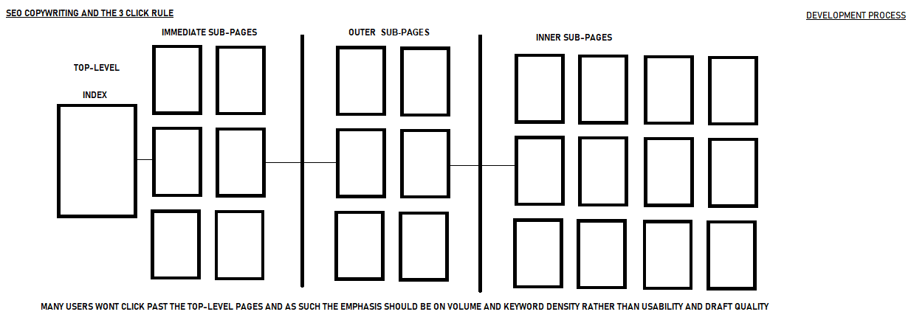

SEO
There are two main search engine ranking factors according to Google's page-rank system and others more generally. They are are domain authority and contents relevance. Relevance is about content and keyphrases, this includes keywords and how they are presented together, their naturally written nature etcetera. It’s all about the page itself as well as its relationship to other pages. This type of SEO Marketing is all about copy-writing.
Domain authority is about links and mentions of keywords and phrases. It’s about what happens on other sites, their contents and its freshness. This type of SEO is about outreach, and outreach marketing is how you utilise it.
We discuss a lot of content and relevance, but when it comes to authority, then not as much.
Setting up listening tools for Search Marketing SEO
This part of your PR-driven SEO program is going to be on autopilot. A tool is going to notify you every time your brand is mentioned. If you’re in PR or social media, this may already be familiar.
Media monitoring is a feature of PR tools. They look for brand mentions in news stories. These might have a big impact on SEO, but these tools don’t report on the website’s authority. Social listening is a feature in a lot of social media management tools, but they only find mentions in social streams, which have no impact on SEO. So we’re going to start with a free tool from the PR world, then show a more powerful, but paid tool built for SEO.
Free Talk-walker Alerts
It’s so simple to set up, you should go there now, set it up and come back. There are just a few simple settings. Here’s what it will look like.
Easy and it costs nothing. Why not just use Google Alerts? Because that tool doesn’t really work any more.
Now you’re going to get a weekly email telling you if and where your brand was mentioned. It will look like this:
PPC Management
Pay per click management is all about paid search and can be categories in terms of discussion with the following term.
What is PPC
How can PPC help your grow.Common Goals
What is PPC?
Also referred to as Cost Per Click, Pay-Per-Click advertising is something you probably see every day and don’t even know it. You know when you Google something and the first 3-4 results at the top of the page are sponsored results? Do you recall looking to the right of those results where there are pictures and links to content related to your search? That’s PPC in its natural habitat.
How Can PPC Help You Grow Your Business?
Applying the techniques of PPC can help you achieve marketing goals, other than just profits. PPC supplements goals including but not limited to: brand exposure, leads, content downloads, contests, newsletter sign-ups, the website traffic and of course conversions.
When forming a strategy for campaigns, you need to identify your personal company objectives, and how they relate to PPC. One company may just be looking for ways to get more eyes on their website and its content. While another may be making a huge sales push.
Here are some examples of common goals:
Increasing traffic – New companies are often looking to build brand awareness and to get their company’s face in the public eye. The great part about using PPC for this goal is that everything is highly measurable. You can set KPI’s (Key performance indicators) and measure clicks. Of course, you can take it one step further by measuring the user paths after they land on your website, and then make adjustments using that data. Note: When your PPC campaign isn’t focused on sales, to keep costs low you should use broader, less expensive keywords.
Drive Leads – Whether they’re short or long term, leads are a huge benefit of PPC campaigns. The key is to measure the users who land on your website via a PPC link, funnel them into some variety of conversion, and then apply a strategy to turn that lead into a sale. Include a logical call to action on your landing page that continues to pull consumers through the sales funnel. Build Brand Awareness – Display ads are a great way to have your brand appear on specific websites relevant to your industry. This implants your brand into the minds of consumers. Ultimately, you can track impressions, engagement, reach & frequency.
Generate Revenue – PPC leads to traffic, which leads to conversions, which leads to sales. The advantage of PPC ads is that they target people who already have an interest in your product. If generating revenue is one of the goals you’re going to want to use more specific, higher-priced words. The premium may be expensive, but it’s a worthwhile investment if you need to drive sales. Keep in mind that you can’t just throw money at the problem, you need to have a long-term plan and strategy tailored to your specific market and budget.
Related: How Much Does PPC Cost?
Identify Your Specific Audience By using PPC campaigns you can get very specific with targeting. By understanding exactly who it is you want to target you can formulate a creative strategy catered to the needs of the audience. Consider the following types of audiences: 
Email us now to hear the latest in SEO and Reputation Management from our Newsletter. We also hold regular seminars on our more unique products and services, as well as the changing trend in new media.
To join our invitation list please contact us through the above form indicating your interest.